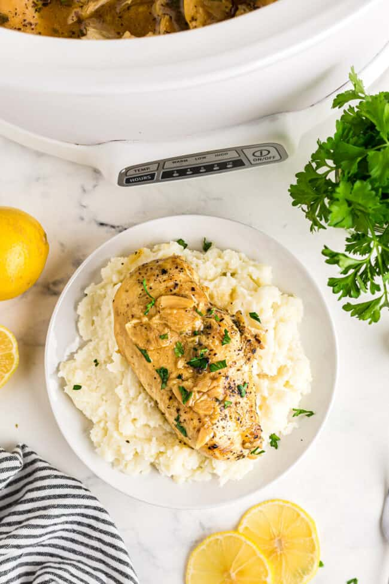

Crockpot Lemon Chicken

Description
You can not go wrong with the flavor combination of Lemon and Chicken, so try this recipe out! This easy to
make and sure to please dish will be an instant hit at any gathering or any dinner table.
Ingredients
- Three (3) heads of garlic
- 2 Lemons
- 1/2 teaspoon kosher salt
- 1 teaspoon dried oregano
- 4 tablespoons unsalted butter
- 4 boneless, skinned chicken breasts
- 1 cup low-sodium chicken broth
- 2 tablespoons lemon juice
- 1 teaspoon better than Boullon chicken base
- 5 sprigs fresh thyme
- Fresh parsley
Instructions
- Cut the tops and bottoms off the garlic heads and lemons. Cut the lemons in half.
Place the garlic and lemons in the bottom of the crockpot insert.
- Combine the salt, pepper, and oregano in a small bowl.
Season both sides of each chicken breast with the seasoned salt mixture.
- Melt the butter in a large skillet over medium high heat. Place the chicken breasts in the skillet to brown, 5 minutes per side.
- Transfer the browned chicken to the crockpot and palce on top of the garlic and lemons
- In a pot, whisk the chicken broth, lemon juice, and bouillon together. Pour over the chicken in the corckpot.
- Place thyme sprigs on top of the chicken
- Cover the crockpot and cook on high for 3 hours or low for 6 hours. Remove the thyme springs, garnish with fresh parsley, and serve hot.